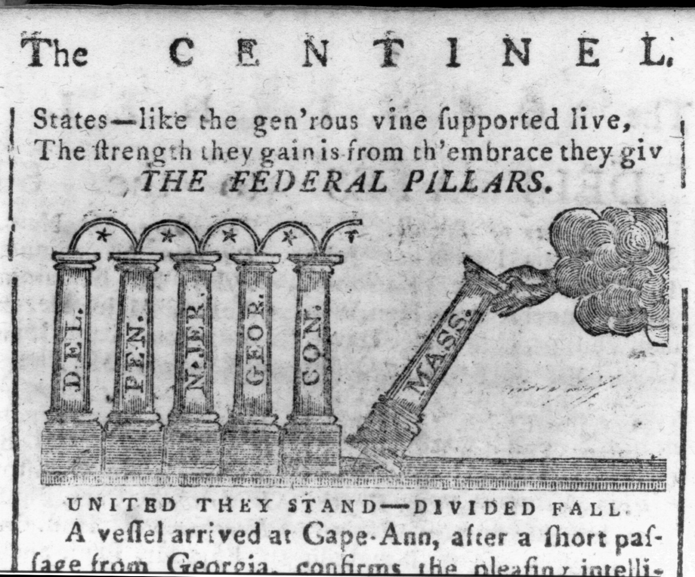

Directions: Read the full text, then answer the questions at the end.
The Constitution left Philadelphia in September 1787 as a proposal, not a government. It would take effect only if conventions elected in the states for that single purpose approved it, and approval by nine of the thirteen states would put it in force among the states that ratified, bypassing the state legislatures whose powers it cut and leaving any state that refused outside the union.
For the next year the argument ran in newspapers, pamphlets, and convention halls. Supporters took the name Federalists. Opponents were called Anti-Federalists. Both sides wrote for the voters who would choose the convention delegates, in a debate conducted in print.
The Federalist case survives in eighty five essays by Alexander Hamilton, James Madison, and John Jay under the pen name Publius, printed in New York newspapers in 1787 and 1788 for the state whose vote the writers most needed, and collected as The Federalist. The tenth essay, by Madison, carries the argument.
Madison defined a faction as a group of citizens, a majority or a minority, united by a passion or an interest harmful to the rights of others or to the whole community. Its causes could not be removed without removing liberty itself, so its effects had to be controlled. A small republic offered no control, since a majority faction could form and rule at once. An extended republic multiplied parties and interests, so an unjust majority could rarely form, and representation refined the public voice.
In the fifty first essay, Madison defended the design as machinery. Government had to control the governed and then be obliged to control itself. Since officeholders would not be angels, the structure had to supply the defect of better motives. Ambition in one branch was set against ambition in another, each branch given the means and the motive to resist the rest.
The division ran twice over. Power surrendered by the people was divided between the national government and the states, then subdivided among separate departments inside each, so rights held a double security. The essay closes by naming justice as the end of government.
The Anti-Federalist case survives in essays signed Brutus, printed in New York in the fall of 1787. Brutus argued that a free republic could survive only in a small territory, where citizens shared manners, sentiments, and interests. The United States held near three million people across a continent of varied climates, products, and habits, and one legislature for such a country would be a government of strangers.
Brutus pointed to the powers themselves. The clause granting Congress every law necessary and proper, joined to the clause making federal law supreme over state law, would let the national government reach every object of life, keep a standing army, and tax without limit, until the states faded. A second objection outlasted the argument about size. The new frame carried no bill of rights, no written protection for speech, press, religion, juries, and arms, although it created the strongest government Americans had ever lived under.
Delaware ratified first and unanimously on December 7, 1787, and Pennsylvania followed within the week over its minority protests. New Jersey and Georgia followed unanimously, and Connecticut in January. Massachusetts settled its deeper contest in February 1788 by ratifying at once and recommending amendments for the first Congress, a settlement carried 187 to 168 that later conventions copied. Maryland and South Carolina followed, and in June New Hampshire became the ninth and decisive state.
Two prizes remained out. At Richmond that June, Patrick Henry argued against ratification while Madison answered him, and Virginia ratified 89 to 79, recommending amendments. New York, the state the essays were written to win, held an Anti-Federalist majority at Poughkeepsie. News that the Constitution was already beyond recall changed the ground, and New York ratified 30 to 27 in July. North Carolina and Rhode Island stayed outside. Rhode Island ratified in May 1790, by two votes, only when Congress prepared to treat it as a foreign nation in customs.

Elections followed in the winter of 1788 and 1789. Every elector voted for George Washington, and the new government opened at New York in April 1789, with the inauguration on April 30. Congress organized the executive departments and, in the Judiciary Act, built the federal courts. The amendments the conventions had recommended waited first among the promises to redeem.
Madison had called a bill of rights unnecessary during ratification. In the First Congress he introduced amendments on June 8, 1789, drawn from the state declarations of rights and the conventions' recommendations. Seventeen passed the House and twelve the Senate and went out to the states. Ten were ratified by December 15, 1791, when Virginia approval made them part of the Constitution. Two were left behind, on apportionment and on congressional pay. The pay amendment was ratified two centuries later, as the Twenty Seventh Amendment.
As one document, the Bill of Rights opens with a limit on Congress and guards speech, press, religion, and assembly, then arms, quartering, searches, juries, and bail. Its closing pair answers the fear that a list could become a trap. The Ninth Amendment holds that naming some rights shall not deny others the people retain. The Tenth reserves every power not delegated to the states or to the people. The government now stood constituted, elected, and amended.
1. State the terms on which the Constitution would take effect. Name who had to approve it, how many approvals were required, and which bodies the plan bypassed.
2. State the definition of faction the reading gives, and explain why Madison argued that its causes could not be removed and that an extended republic could control its effects.
3. In the fifty first essay, state the double division of power Madison described, the security he said it produced, and what he named as the end of government.
4. State the argument Brutus made about the size of a republic, name the two clauses his case joined against the Constitution, and state his objection about rights.
5. Answer in a short paragraph. The lesson question asks how the Constitution was sold to a skeptical people and what the skeptics won. Give the strongest answer the reading supports, using the Massachusetts settlement and one close convention vote as evidence.
1. State the terms on which the Constitution would take effect. Conventions elected in each state for that single purpose had to approve it, bypassing the state legislatures, whose powers the new frame cut. Approval by nine of the thirteen states would put the Constitution in force among the states that ratified. A state that refused stayed outside the union.
2. State the definition of faction, and explain the causes and effects argument. A faction is a group of citizens, a majority or a minority, united by a passion or an interest harmful to the rights of others or to the whole community. Its causes could not be removed without removing liberty itself, so its effects had to be controlled. A small republic offered no control, since a majority faction could form and rule at once. An extended republic multiplied parties and interests, so an unjust majority could rarely form, and representation refined the public voice.
3. State the double division, the security, and the end of government. Power surrendered by the people was divided between the national government and the states, then subdivided among separate departments inside each. The two divisions working together gave the rights of the people a double security, since the governments control each other while each controls itself. The essay closes by naming justice as the end of government.
4. State the size argument, the two clauses, and the objection about rights. Brutus argued that a free republic could survive only in a small territory, where citizens shared manners, sentiments, and interests. The United States held near three million people across a continent of varied climates, products, and habits, so one legislature would be a government of strangers. His case joined the clause granting Congress every law necessary and proper to the clause making federal law supreme over state law, a pair that would let the national government reach every object of life, keep a standing army, and tax without limit. His objection about rights was that the frame carried no bill of rights, no written protection for speech, press, religion, juries, and arms.
5. How was the Constitution sold, and what did the skeptics win? Full credit answers hold both halves. The Constitution was sold in print and in conventions, by the eighty five Federalist essays that answered the skeptics argument by argument and by Federalist majorities assembled state by state, Delaware first and unanimously on December 7, 1787, New Hampshire ninth in June 1788, Virginia 89 to 79 and New York 30 to 27. The skeptics lost the vote and won the settlement. Massachusetts in February 1788 ratified 187 to 168 only while recommending amendments for the first Congress, the compromise later conventions copied, and that promise produced the twelve amendments of 1789 and the ten ratified by December 15, 1791. A paragraph that names only the essays, or only the amendments, earns partial credit.